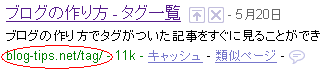
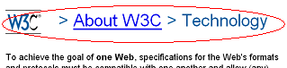

ブログのデザイン的な見栄えの部分をカスタマイズするには、スタイルシート(CSS)で一括して変更します。
記事本文の行間や文字の大きさ、色彩などを変えることができます。
ライブドアやSeesaa、FC2など、利用しているブログサービスでスタイルシートの編集が可能であれば詳細に設定できます。
ブログのカスタマイズ方法をご紹介しています。
SeesaaやFC2などhtmlの編集が可能なレンタルサービスを利用している場合は、詳細にブログをカスタマイズできます。
ブログのデザイン的な見栄えの部分をカスタマイズするには、スタイルシート(CSS)で一括して変更します。
記事本文の行間や文字の大きさ、色彩などを変えることができます。
ライブドアやSeesaa、FC2など、利用しているブログサービスでスタイルシートの編集が可能であれば詳細に設定できます。
Seesaaブログのタグページで、一覧ページの/tag/っていうのがあったんですが、どうも最近なくなってしまったようです。

ひそかに、ブログカスタマイズしてたんですが、せっかく作ったのになくなってしまったようでして…。
このタグページはもうしょうがないですけど、これを機にレンタルサーバーに引っ越そうかなと考えています。
Seesaa blog でのパンくずリストの作り方ですが、ウェブ標準な作り方がわからなかったんで W3C をのぞいてきました。
W3C ではこんな感じで作られているようです。

どうやらパンくずリストごと h1 タイトルでくくっているようなんですが、どういった作り方がSEO対策的に一番いいのかっていうのをパンくずリスト比較しようと思います。
ちなみに、パンくずリストっていうのは、ブログ訪問者さまが迷わないようにするためのナビゲーションリンクのことです。
ヘンゼルとグレーテルみたいに、森で迷っても大丈夫なように、パンくずを残して道しるべにするものです。
パンくずリストの作り方の続き
ブログ階層にも深さが必要だと思うんですけど、それにはきちんとしたフォルダ分けをする必要があるかと思うんです。
でも、無料ブログサービスの場合、カテゴリごとのフォルダわけができなかったりもしたりです、、
そんなわけで、ブログ階層の作り方はどうすればいいんだろう？っていう疑問について考えてみました。
ブログ階層の作り方の続き今までどうにも気になっていたのですが、シーサーブログのhtmlタグで、「これははたして必要なものなのだろうか？」という疑問があるhtmlタグもあったりします。
デフォルトでついているのだから、たぶん何らかの形で必要なものなのだろうという気もしますが、あまり余計なhtmlタグはない方がいいと思うんで、削減してブログカスタマイズしてみることにしました。
ブログのhtmlタグを削減してみたの続き検索エンジンの検索結果で、ブログのメタタグで設定した説明文が表示されることが多いと思うんですけど、そのページ内容が分かるような適切な説明文を記入するべきなんだそうです。
メタタグ部分の description を適切に記入することで、ブログ説明文の品質が高くなると、ある程度は設定した文章が検索結果でも表示されるって話です。
このブログでもアクセス解析の検索キーワードを見てみると、「当ブログにはそのコンテンツ内容はないんです、、」っていうようなキーワードがけっこうあるんですけど、やっぱそれはブログ運営者が適切な description 設定をしていないせいだと思うんです。
seesaaブログのdescriptionをカスタマイズの続き